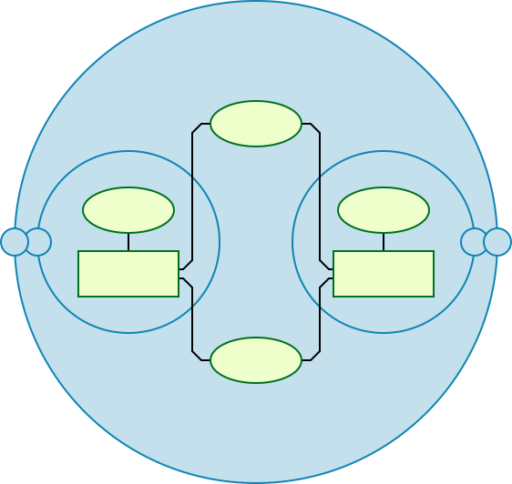
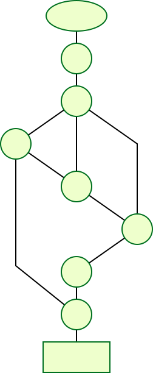

pytest fixtures: explicit, modular, scalable¶
Software test fixtures initialize test functions. They provide a fixed baseline so that tests execute reliably and produce consistent, repeatable, results. Initialization may setup services, state, or other operating environments. These are accessed by test functions through arguments; for each fixture used by a test function there is typically a parameter (named after the fixture) in the test function’s definition.
pytest fixtures offer dramatic improvements over the classic xUnit style of setup/teardown functions:
fixtures have explicit names and are activated by declaring their use from test functions, modules, classes or whole projects.
fixtures are implemented in a modular manner, as each fixture name triggers a fixture function which can itself use other fixtures.
fixture management scales from simple unit to complex functional testing, allowing to parametrize fixtures and tests according to configuration and component options, or to re-use fixtures across function, class, module or whole test session scopes.
teardown logic can be easily, and safely managed, no matter how many fixtures are used, without the need to carefully handle errors by hand or micromanage the order that cleanup steps are added.
In addition, pytest continues to support classic xunit-style setup. You can mix both styles, moving incrementally from classic to new style, as you prefer. You can also start out from existing unittest.TestCase style or nose based projects.
Fixtures are defined using the @pytest.fixture decorator, described below. Pytest has useful built-in fixtures, listed here for reference:
capfdCapture, as text, output to file descriptors
1and2.capfdbinaryCapture, as bytes, output to file descriptors
1and2.caplogControl logging and access log entries.
capsysCapture, as text, output to
sys.stdoutandsys.stderr.capsysbinaryCapture, as bytes, output to
sys.stdoutandsys.stderr.cacheStore and retrieve values across pytest runs.
doctest_namespaceProvide a dict injected into the docstests namespace.
monkeypatchTemporarily modify classes, functions, dictionaries,
os.environ, and other objects.pytestconfigAccess to configuration values, pluginmanager and plugin hooks.
record_propertyAdd extra properties to the test.
record_testsuite_propertyAdd extra properties to the test suite.
recwarnRecord warnings emitted by test functions.
requestProvide information on the executing test function.
testdirProvide a temporary test directory to aid in running, and testing, pytest plugins.
tmp_pathProvide a
pathlib.Pathobject to a temporary directory which is unique to each test function.tmp_path_factoryMake session-scoped temporary directories and return
pathlib.Pathobjects.tmpdirProvide a
py.path.localobject to a temporary directory which is unique to each test function; replaced bytmp_path.tmpdir_factoryMake session-scoped temporary directories and return
py.path.localobjects; replaced bytmp_path_factory.
What fixtures are¶
Before we dive into what fixtures are, let’s first look at what a test is.
In the simplest terms, a test is meant to look at the result of a particular behavior, and make sure that result aligns with what you would expect. Behavior is not something that can be empirically measured, which is why writing tests can be challenging.
“Behavior” is the way in which some system acts in response to a particular situation and/or stimuli. But exactly how or why something is done is not quite as important as what was done.
You can think of a test as being broken down into four steps:
Arrange
Act
Assert
Cleanup
Arrange is where we prepare everything for our test. This means pretty much everything except for the “act”. It’s lining up the dominoes so that the act can do its thing in one, state-changing step. This can mean preparing objects, starting/killing services, entering records into a database, or even things like defining a URL to query, generating some credentials for a user that doesn’t exist yet, or just waiting for some process to finish.
Act is the singular, state-changing action that kicks off the behavior we want to test. This behavior is what carries out the changing of the state of the system under test (SUT), and it’s the resulting changed state that we can look at to make a judgement about the behavior. This typically takes the form of a function/method call.
Assert is where we look at that resulting state and check if it looks how
we’d expect after the dust has settled. It’s where we gather evidence to say the
behavior does or does not align with what we expect. The assert in our test
is where we take that measurement/observation and apply our judgement to it. If
something should be green, we’d say assert thing == "green".
Cleanup is where the test picks up after itself, so other tests aren’t being accidentally influenced by it.
At it’s core, the test is ultimately the act and assert steps, with the arrange step only providing the context. Behavior exists between act and assert.
Back to fixtures¶
“Fixtures”, in the literal sense, are each of the arrange steps and data. They’re everything that test needs to do its thing.
At a basic level, test functions request fixtures by declaring them as
arguments, as in the test_ehlo(smtp_connection): in the previous example.
In pytest, “fixtures” are functions you define that serve this purpose. But they don’t have to be limited to just the arrange steps. They can provide the act step, as well, and this can be a powerful technique for designing more complex tests, especially given how pytest’s fixture system works. But we’ll get into that further down.
We can tell pytest that a particular function is a fixture by decorating it with
@pytest.fixture. Here’s a simple example of
what a fixture in pytest might look like:
import pytest
class Fruit:
def __init__(self, name):
self.name = name
def __eq__(self, other):
return self.name == other.name
@pytest.fixture
def my_fruit():
return Fruit("apple")
@pytest.fixture
def fruit_basket(my_fruit):
return [Fruit("banana"), my_fruit]
def test_my_fruit_in_basket(my_fruit, fruit_basket):
assert my_fruit in fruit_basket
Tests don’t have to be limited to a single fixture, either. They can depend on as many fixtures as you want, and fixtures can use other fixtures, as well. This is where pytest’s fixture system really shines.
Don’t be afraid to break things up if it makes things cleaner.
“Requesting” fixtures¶
So fixtures are how we prepare for a test, but how do we tell pytest what tests and fixtures need which fixtures?
At a basic level, test functions request fixtures by declaring them as
arguments, as in the test_my_fruit_in_basket(my_fruit, fruit_basket): in the
previous example.
At a basic level, pytest depends on a test to tell it what fixtures it needs, so
we have to build that information into the test itself. We have to make the test
“request” the fixtures it depends on, and to do this, we have to
list those fixtures as parameters in the test function’s “signature” (which is
the def test_something(blah, stuff, more): line).
When pytest goes to run a test, it looks at the parameters in that test function’s signature, and then searches for fixtures that have the same names as those parameters. Once pytest finds them, it runs those fixtures, captures what they returned (if anything), and passes those objects into the test function as arguments.
Quick example¶
import pytest
class Fruit:
def __init__(self, name):
self.name = name
self.cubed = False
def cube(self):
self.cubed = True
class FruitSalad:
def __init__(self, *fruit_bowl):
self.fruit = fruit_bowl
self._cube_fruit()
def _cube_fruit(self):
for fruit in self.fruit:
fruit.cube()
# Arrange
@pytest.fixture
def fruit_bowl():
return [Fruit("apple"), Fruit("banana")]
def test_fruit_salad(fruit_bowl):
# Act
fruit_salad = FruitSalad(*fruit_bowl)
# Assert
assert all(fruit.cubed for fruit in fruit_salad.fruit)
In this example, test_fruit_salad “requests” fruit_bowl (i.e.
def test_fruit_salad(fruit_bowl):), and when pytest sees this, it will
execute the fruit_bowl fixture function and pass the object it returns into
test_fruit_salad as the fruit_bowl argument.
Here’s roughly what’s happening if we were to do it by hand:
def fruit_bowl():
return [Fruit("apple"), Fruit("banana")]
def test_fruit_salad(fruit_bowl):
# Act
fruit_salad = FruitSalad(*fruit_bowl)
# Assert
assert all(fruit.cubed for fruit in fruit_salad.fruit)
# Arrange
bowl = fruit_bowl()
test_fruit_salad(fruit_bowl=bowl)
Fixtures can request other fixtures¶
One of pytest’s greatest strengths is its extremely flexible fixture system. It allows us to boil down complex requirements for tests into more simple and organized functions, where we only need to have each one describe the things they are dependent on. We’ll get more into this further down, but for now, here’s a quick example to demonstrate how fixtures can use other fixtures:
# contents of test_append.py
import pytest
# Arrange
@pytest.fixture
def first_entry():
return "a"
# Arrange
@pytest.fixture
def order(first_entry):
return [first_entry]
def test_string(order):
# Act
order.append("b")
# Assert
assert order == ["a", "b"]
Notice that this is the same example from above, but very little changed. The fixtures in pytest request fixtures just like tests. All the same requesting rules apply to fixtures that do for tests. Here’s how this example would work if we did it by hand:
def first_entry():
return "a"
def order(first_entry):
return [first_entry]
def test_string(order):
# Act
order.append("b")
# Assert
assert order == ["a", "b"]
entry = first_entry()
the_list = order(first_entry=entry)
test_string(order=the_list)
Fixtures are reusable¶
One of the things that makes pytest’s fixture system so powerful, is that it gives us the abilty to define a generic setup step that can reused over and over, just like a normal function would be used. Two different tests can request the same fixture and have pytest give each test their own result from that fixture.
This is extremely useful for making sure tests aren’t affected by each other. We can use this system to make sure each test gets its own fresh batch of data and is starting from a clean state so it can provide consistent, repeatable results.
Here’s an example of how this can come in handy:
# contents of test_append.py
import pytest
# Arrange
@pytest.fixture
def first_entry():
return "a"
# Arrange
@pytest.fixture
def order(first_entry):
return [first_entry]
def test_string(order):
# Act
order.append("b")
# Assert
assert order == ["a", "b"]
def test_int(order):
# Act
order.append(2)
# Assert
assert order == ["a", 2]
Each test here is being given its own copy of that list object,
which means the order fixture is getting executed twice (the same
is true for the first_entry fixture). If we were to do this by hand as
well, it would look something like this:
def first_entry():
return "a"
def order(first_entry):
return [first_entry]
def test_string(order):
# Act
order.append("b")
# Assert
assert order == ["a", "b"]
def test_int(order):
# Act
order.append(2)
# Assert
assert order == ["a", 2]
entry = first_entry()
the_list = order(first_entry=entry)
test_string(order=the_list)
entry = first_entry()
the_list = order(first_entry=entry)
test_int(order=the_list)
A test/fixture can request more than one fixture at a time¶
Tests and fixtures aren’t limited to requesting a single fixture at a time. They can request as many as they like. Here’s another quick example to demonstrate:
# contents of test_append.py
import pytest
# Arrange
@pytest.fixture
def first_entry():
return "a"
# Arrange
@pytest.fixture
def second_entry():
return 2
# Arrange
@pytest.fixture
def order(first_entry, second_entry):
return [first_entry, second_entry]
# Arrange
@pytest.fixture
def expected_list():
return ["a", 2, 3.0]
def test_string(order, expected_list):
# Act
order.append(3.0)
# Assert
assert order == expected_list
Fixtures can be requested more than once per test (return values are cached)¶
Fixtures can also be requested more than once during the same test, and pytest won’t execute them again for that test. This means we can request fixtures in multiple fixtures that are dependent on them (and even again in the test itself) without those fixtures being executed more than once.
# contents of test_append.py
import pytest
# Arrange
@pytest.fixture
def first_entry():
return "a"
# Arrange
@pytest.fixture
def order():
return []
# Act
@pytest.fixture
def append_first(order, first_entry):
return order.append(first_entry)
def test_string_only(append_first, order, first_entry):
# Assert
assert order == [first_entry]
If a requested fixture was executed once for every time it was requested
during a test, then this test would fail because both append_first and
test_string_only would see order as an empty list (i.e. []), but
since the return value of order was cached (along with any side effects
executing it may have had) after the first time it was called, both the test and
append_first were referencing the same object, and the test saw the effect
append_first had on that object.
Autouse fixtures (fixtures you don’t have to request)¶
Sometimes you may want to have a fixture (or even several) that you know all your tests will depend on. “Autouse” fixtures are a convenient way to make all tests automatically request them. This can cut out a lot of redundant requests, and can even provide more advanced fixture usage (more on that further down).
We can make a fixture an autouse fixture by passing in autouse=True to the
fixture’s decorator. Here’s a simple example for how they can be used:
# contents of test_append.py
import pytest
@pytest.fixture
def first_entry():
return "a"
@pytest.fixture
def order(first_entry):
return []
@pytest.fixture(autouse=True)
def append_first(order, first_entry):
return order.append(first_entry)
def test_string_only(order, first_entry):
assert order == [first_entry]
def test_string_and_int(order, first_entry):
order.append(2)
assert order == [first_entry, 2]
In this example, the append_first fixture is an autouse fixture. Because it
happens automatically, both tests are affected by it, even though neither test
requested it. That doesn’t mean they can’t be requested though; just
that it isn’t necessary.
Scope: sharing fixtures across classes, modules, packages or session¶
Fixtures requiring network access depend on connectivity and are
usually time-expensive to create. Extending the previous example, we
can add a scope="module" parameter to the
@pytest.fixture invocation
to cause a smtp_connection fixture function, responsible to create a connection to a preexisting SMTP server, to only be invoked
once per test module (the default is to invoke once per test function).
Multiple test functions in a test module will thus
each receive the same smtp_connection fixture instance, thus saving time.
Possible values for scope are: function, class, module, package or session.
The next example puts the fixture function into a separate conftest.py file
so that tests from multiple test modules in the directory can
access the fixture function:
# content of conftest.py
import pytest
import smtplib
@pytest.fixture(scope="module")
def smtp_connection():
return smtplib.SMTP("smtp.gmail.com", 587, timeout=5)
# content of test_module.py
def test_ehlo(smtp_connection):
response, msg = smtp_connection.ehlo()
assert response == 250
assert b"smtp.gmail.com" in msg
assert 0 # for demo purposes
def test_noop(smtp_connection):
response, msg = smtp_connection.noop()
assert response == 250
assert 0 # for demo purposes
Here, the test_ehlo needs the smtp_connection fixture value. pytest
will discover and call the @pytest.fixture
marked smtp_connection fixture function. Running the test looks like this:
$ pytest test_module.py
=========================== test session starts ============================
platform linux -- Python 3.x.y, pytest-6.x.y, py-1.x.y, pluggy-1.x.y
cachedir: $PYTHON_PREFIX/.pytest_cache
rootdir: $REGENDOC_TMPDIR
collected 2 items
test_module.py FF [100%]
================================= FAILURES =================================
________________________________ test_ehlo _________________________________
smtp_connection = <smtplib.SMTP object at 0xdeadbeef>
def test_ehlo(smtp_connection):
response, msg = smtp_connection.ehlo()
assert response == 250
assert b"smtp.gmail.com" in msg
> assert 0 # for demo purposes
E assert 0
test_module.py:7: AssertionError
________________________________ test_noop _________________________________
smtp_connection = <smtplib.SMTP object at 0xdeadbeef>
def test_noop(smtp_connection):
response, msg = smtp_connection.noop()
assert response == 250
> assert 0 # for demo purposes
E assert 0
test_module.py:13: AssertionError
========================= short test summary info ==========================
FAILED test_module.py::test_ehlo - assert 0
FAILED test_module.py::test_noop - assert 0
============================ 2 failed in 0.12s =============================
You see the two assert 0 failing and more importantly you can also see
that the exactly same smtp_connection object was passed into the
two test functions because pytest shows the incoming argument values in the
traceback. As a result, the two test functions using smtp_connection run
as quick as a single one because they reuse the same instance.
If you decide that you rather want to have a session-scoped smtp_connection
instance, you can simply declare it:
@pytest.fixture(scope="session")
def smtp_connection():
# the returned fixture value will be shared for
# all tests requesting it
...
Fixture scopes¶
Fixtures are created when first requested by a test, and are destroyed based on their scope:
function: the default scope, the fixture is destroyed at the end of the test.class: the fixture is destroyed during teardown of the last test in the class.module: the fixture is destroyed during teardown of the last test in the module.package: the fixture is destroyed during teardown of the last test in the package.session: the fixture is destroyed at the end of the test session.
Note
Pytest only caches one instance of a fixture at a time, which means that when using a parametrized fixture, pytest may invoke a fixture more than once in the given scope.
Dynamic scope¶
New in version 5.2.
In some cases, you might want to change the scope of the fixture without changing the code.
To do that, pass a callable to scope. The callable must return a string with a valid scope
and will be executed only once - during the fixture definition. It will be called with two
keyword arguments - fixture_name as a string and config with a configuration object.
This can be especially useful when dealing with fixtures that need time for setup, like spawning a docker container. You can use the command-line argument to control the scope of the spawned containers for different environments. See the example below.
def determine_scope(fixture_name, config):
if config.getoption("--keep-containers", None):
return "session"
return "function"
@pytest.fixture(scope=determine_scope)
def docker_container():
yield spawn_container()
Fixture errors¶
pytest does its best to put all the fixtures for a given test in a linear order so that it can see which fixture happens first, second, third, and so on. If an earlier fixture has a problem, though, and raises an exception, pytest will stop executing fixtures for that test and mark the test as having an error.
When a test is marked as having an error, it doesn’t mean the test failed, though. It just means the test couldn’t even be attempted because one of the things it depends on had a problem.
This is one reason why it’s a good idea to cut out as many unnecessary dependencies as possible for a given test. That way a problem in something unrelated isn’t causing us to have an incomplete picture of what may or may not have issues.
Here’s a quick example to help explain:
import pytest
@pytest.fixture
def order():
return []
@pytest.fixture
def append_first(order):
order.append(1)
@pytest.fixture
def append_second(order, append_first):
order.extend([2])
@pytest.fixture(autouse=True)
def append_third(order, append_second):
order += [3]
def test_order(order):
assert order == [1, 2, 3]
If, for whatever reason, order.append(1) had a bug and it raises an exception,
we wouldn’t be able to know if order.extend([2]) or order += [3] would
also have problems. After append_first throws an exception, pytest won’t run
any more fixtures for test_order, and it won’t even try to run
test_order itself. The only things that would’ve run would be order and
append_first.
Teardown/Cleanup (AKA Fixture finalization)¶
When we run our tests, we’ll want to make sure they clean up after themselves so they don’t mess with any other tests (and also so that we don’t leave behind a mountain of test data to bloat the system). Fixtures in pytest offer a very useful teardown system, which allows us to define the specific steps necessary for each fixture to clean up after itself.
This system can be leveraged in two ways.
1. yield fixtures (recommended)¶
“Yield” fixtures yield instead of return. With these
fixtures, we can run some code and pass an object back to the requesting
fixture/test, just like with the other fixtures. The only differences are:
returnis swapped out foryield.Any teardown code for that fixture is placed after the
yield.
Once pytest figures out a linear order for the fixtures, it will run each one up until it returns or yields, and then move on to the next fixture in the list to do the same thing.
Once the test is finished, pytest will go back down the list of fixtures, but in
the reverse order, taking each one that yielded, and running the code inside
it that was after the yield statement.
As a simple example, let’s say we want to test sending email from one user to another. We’ll have to first make each user, then send the email from one user to the other, and finally assert that the other user received that message in their inbox. If we want to clean up after the test runs, we’ll likely have to make sure the other user’s mailbox is emptied before deleting that user, otherwise the system may complain.
Here’s what that might look like:
import pytest
from emaillib import Email, MailAdminClient
@pytest.fixture
def mail_admin():
return MailAdminClient()
@pytest.fixture
def sending_user(mail_admin):
user = mail_admin.create_user()
yield user
admin_client.delete_user(user)
@pytest.fixture
def receiving_user(mail_admin):
user = mail_admin.create_user()
yield user
admin_client.delete_user(user)
def test_email_received(receiving_user, email):
email = Email(subject="Hey!", body="How's it going?")
sending_user.send_email(_email, receiving_user)
assert email in receiving_user.inbox
Because receiving_user is the last fixture to run during setup, it’s the first to run
during teardown.
There is a risk that even having the order right on the teardown side of things doesn’t guarantee a safe cleanup. That’s covered in a bit more detail in Safe teardowns.
Handling errors for yield fixture¶
If a yield fixture raises an exception before yielding, pytest won’t try to run
the teardown code after that yield fixture’s yield statement. But, for every
fixture that has already run successfully for that test, pytest will still
attempt to tear them down as it normally would.
2. Adding finalizers directly¶
While yield fixtures are considered to be the cleaner and more straighforward option, there is another choice, and that is to add “finalizer” functions directly to the test’s request-context object. It brings a similar result as yield fixtures, but requires a bit more verbosity.
In order to use this approach, we have to request the request-context object
(just like we would request another fixture) in the fixture we need to add
teardown code for, and then pass a callable, containing that teardown code, to
its addfinalizer method.
We have to be careful though, because pytest will run that finalizer once it’s been added, even if that fixture raises an exception after adding the finalizer. So to make sure we don’t run the finalizer code when we wouldn’t need to, we would only add the finalizer once the fixture would have done something that we’d need to teardown.
Here’s how the previous example would look using the addfinalizer method:
import pytest
from emaillib import Email, MailAdminClient
@pytest.fixture
def mail_admin():
return MailAdminClient()
@pytest.fixture
def sending_user(mail_admin):
user = mail_admin.create_user()
yield user
admin_client.delete_user(user)
@pytest.fixture
def receiving_user(mail_admin, request):
user = mail_admin.create_user()
def delete_user():
admin_client.delete_user(user)
request.addfinalizer(delete_user)
return user
@pytest.fixture
def email(sending_user, receiving_user, request):
_email = Email(subject="Hey!", body="How's it going?")
sending_user.send_email(_email, receiving_user)
def empty_mailbox():
receiving_user.delete_email(_email)
request.addfinalizer(empty_mailbox)
return _email
def test_email_received(receiving_user, email):
assert email in receiving_user.inbox
It’s a bit longer than yield fixtures and a bit more complex, but it does offer some nuances for when you’re in a pinch.
Safe teardowns¶
The fixture system of pytest is very powerful, but it’s still being run by a computer, so it isn’t able to figure out how to safely teardown everything we throw at it. If we aren’t careful, an error in the wrong spot might leave stuff from our tests behind, and that can cause further issues pretty quickly.
For example, consider the following tests (based off of the mail example from above):
import pytest
from emaillib import Email, MailAdminClient
@pytest.fixture
def setup():
mail_admin = MailAdminClient()
sending_user = mail_admin.create_user()
receiving_user = mail_admin.create_user()
email = Email(subject="Hey!", body="How's it going?")
sending_user.send_emai(email, receiving_user)
yield receiving_user, email
receiving_user.delete_email(email)
admin_client.delete_user(sending_user)
admin_client.delete_user(receiving_user)
def test_email_received(setup):
receiving_user, email = setup
assert email in receiving_user.inbox
This version is a lot more compact, but it’s also harder to read, doesn’t have a very descriptive fixture name, and none of the fixtures can be reused easily.
There’s also a more serious issue, which is that if any of those steps in the setup raise an exception, none of the teardown code will run.
One option might be to go with the addfinalizer method instead of yield
fixtures, but that might get pretty complex and difficult to maintain (and it
wouldn’t be compact anymore).
Safe fixture structure¶
The safest and simplest fixture structure requires limiting fixtures to only making one state-changing action each, and then bundling them together with their teardown code, as the email examples above showed.
The chance that a state-changing operation can fail but still modify state is neglibible, as most of these operations tend to be transaction-based (at least at the level of testing where state could be left behind). So if we make sure that any successful state-changing action gets torn down by moving it to a separate fixture function and separating it from other, potentially failing state-changing actions, then our tests will stand the best chance at leaving the test environment the way they found it.
For an example, let’s say we have a website with a login page, and we have access to an admin API where we can generate users. For our test, we want to:
Create a user through that admin API
Launch a browser using Selenium
Go to the login page of our site
Log in as the user we created
Assert that their name is in the header of the landing page
We wouldn’t want to leave that user in the system, nor would we want to leave that browser session running, so we’ll want to make sure the fixtures that create those things clean up after themselves.
Here’s what that might look like:
Note
For this example, certain fixtures (i.e. base_url and
admin_credentials) are implied to exist elsewhere. So for now, let’s
assume they exist, and we’re just not looking at them.
from uuid import uuid4
from urllib.parse import urljoin
from selenium.webdriver import Chrome
import pytest
from src.utils.pages import LoginPage, LandingPage
from src.utils import AdminApiClient
from src.utils.data_types import User
@pytest.fixture
def admin_client(base_url, admin_credentials):
return AdminApiClient(base_url, **admin_credentials)
@pytest.fixture
def user(admin_client):
_user = User(name="Susan", username=f"testuser-{uuid4()}", password="P4$$word")
admin_client.create_user(_user)
yield _user
admin_client.delete_user(_user)
@pytest.fixture
def driver():
_driver = Chrome()
yield _driver
_driver.quit()
@pytest.fixture
def login(driver, base_url, user):
driver.get(urljoin(base_url, "/login"))
page = LoginPage(driver)
page.login(user)
@pytest.fixture
def landing_page(driver, login):
return LandingPage(driver)
def test_name_on_landing_page_after_login(landing_page, user):
assert landing_page.header == f"Welcome, {user.name}!"
The way the dependencies are laid out means it’s unclear if the user fixture
would execute before the driver fixture. But that’s ok, because those are
atomic operations, and so it doesn’t matter which one runs first because the
sequence of events for the test is still linearizable. But what does matter
is that, no matter which one runs first, if the one raises an exception while
the other would not have, neither will have left anything behind. If driver
executes before user, and user raises an exception, the driver will
still quit, and the user was never made. And if driver was the one to raise
the exception, then the driver would never have been started and the user would
never have been made.
Fixture availability¶
Fixture availability is determined from the perspective of the test. A fixture is only available for tests to request if they are in the scope that fixture is defined in. If a fixture is defined inside a class, it can only be requested by tests inside that class. But if a fixture is defined inside the global scope of the module, than every test in that module, even if it’s defined inside a class, can request it.
Similarly, a test can also only be affected by an autouse fixture if that test is in the same scope that autouse fixture is defined in (see Autouse fixtures are executed first within their scope).
A fixture can also request any other fixture, no matter where it’s defined, so long as the test requesting them can see all fixtures involved.
For example, here’s a test file with a fixture (outer) that requests a
fixture (inner) from a scope it wasn’t defined in:
import pytest
@pytest.fixture
def order():
return []
@pytest.fixture
def outer(order, inner):
order.append("outer")
class TestOne:
@pytest.fixture
def inner(self, order):
order.append("one")
def test_order(self, order, outer):
assert order == ["one", "outer"]
class TestTwo:
@pytest.fixture
def inner(self, order):
order.append("two")
def test_order(self, order, outer):
assert order == ["two", "outer"]
From the tests’ perspectives, they have no problem seeing each of the fixtures they’re dependent on:
So when they run, outer will have no problem finding inner, because
pytest searched from the tests’ perspectives.
Note
The scope a fixture is defined in has no bearing on the order it will be instantiated in: the order is mandated by the logic described here.
conftest.py: sharing fixtures across multiple files¶
The conftest.py file serves as a means of providing fixtures for an entire
directory. Fixtures defined in a conftest.py can be used by any test
in that package without needing to import them (pytest will automatically
discover them).
You can have multiple nested directories/packages containing your tests, and
each directory can have its own conftest.py with its own fixtures, adding on
to the ones provided by the conftest.py files in parent directories.
For example, given a test file structure like this:
tests/
__init__.py
conftest.py
# content of tests/conftest.py
import pytest
@pytest.fixture
def order():
return []
@pytest.fixture
def top(order, innermost):
order.append("top")
test_top.py
# content of tests/test_top.py
import pytest
@pytest.fixture
def innermost(order):
order.append("innermost top")
def test_order(order, top):
assert order == ["innermost top", "top"]
subpackage/
__init__.py
conftest.py
# content of tests/subpackage/conftest.py
import pytest
@pytest.fixture
def mid(order):
order.append("mid subpackage")
test_subpackage.py
# content of tests/subpackage/test_subpackage.py
import pytest
@pytest.fixture
def innermost(order, mid):
order.append("innermost subpackage")
def test_order(order, top):
assert order == ["mid subpackage", "innermost subpackage", "top"]
The boundaries of the scopes can be visualized like this:

The directories become their own sort of scope where fixtures that are defined
in a conftest.py file in that directory become available for that whole
scope.
Tests are allowed to search upward (stepping outside a circle) for fixtures, but
can never go down (stepping inside a circle) to continue their search. So
tests/subpackage/test_subpackage.py::test_order would be able to find the
innermost fixture defined in tests/subpackage/test_subpackage.py, but
the one defined in tests/test_top.py would be unavailable to it because it
would have to step down a level (step inside a circle) to find it.
The first fixture the test finds is the one that will be used, so fixtures can be overriden if you need to change or extend what one does for a particular scope.
You can also use the conftest.py file to implement
local per-directory plugins.
Fixtures from third-party plugins¶
Fixtures don’t have to be defined in this structure to be available for tests, though. They can also be provided by third-party plugins that are installed, and this is how many pytest plugins operate. As long as those plugins are installed, the fixtures they provide can be requested from anywhere in your test suite.
Because they’re provided from outside the structure of your test suite,
third-party plugins don’t really provide a scope like conftest.py files and
the directories in your test suite do. As a result, pytest will search for
fixtures stepping out through scopes as explained previously, only reaching
fixtures defined in plugins last.
For example, given the following file structure:
tests/
__init__.py
conftest.py
# content of tests/conftest.py
import pytest
@pytest.fixture
def order():
return []
subpackage/
__init__.py
conftest.py
# content of tests/subpackage/conftest.py
import pytest
@pytest.fixture(autouse=True)
def mid(order, b_fix):
order.append("mid subpackage")
test_subpackage.py
# content of tests/subpackage/test_subpackage.py
import pytest
@pytest.fixture
def inner(order, mid, a_fix):
order.append("inner subpackage")
def test_order(order, inner):
assert order == ["b_fix", "mid subpackage", "a_fix", "inner subpackage"]
If plugin_a is installed and provides the fixture a_fix, and
plugin_b is installed and provides the fixture b_fix, then this is what
the test’s search for fixtures would look like:

pytest will only search for a_fix and b_fix in the plugins after
searching for them first in the scopes inside tests/.
Sharing test data¶
If you want to make test data from files available to your tests, a good way to do this is by loading these data in a fixture for use by your tests. This makes use of the automatic caching mechanisms of pytest.
Another good approach is by adding the data files in the tests folder.
There are also community plugins available to help managing this aspect of
testing, e.g. pytest-datadir
and pytest-datafiles.
Fixture instantiation order¶
When pytest wants to execute a test, once it knows what fixtures will be executed, it has to figure out the order they’ll be executed in. To do this, it considers 3 factors:
scope
dependencies
autouse
Names of fixtures or tests, where they’re defined, the order they’re defined in, and the order fixtures are requested in have no bearing on execution order beyond coincidence. While pytest will try to make sure coincidences like these stay consistent from run to run, it’s not something that should be depended on. If you want to control the order, it’s safest to rely on these 3 things and make sure dependencies are clearly established.
Higher-scoped fixtures are executed first¶
Within a function request for fixtures, those of higher-scopes (such as
session) are executed before lower-scoped fixtures (such as function or
class).
Here’s an example:
import pytest
@pytest.fixture(scope="session")
def order():
return []
@pytest.fixture
def func(order):
order.append("function")
@pytest.fixture(scope="class")
def cls(order):
order.append("class")
@pytest.fixture(scope="module")
def mod(order):
order.append("module")
@pytest.fixture(scope="package")
def pack(order):
order.append("package")
@pytest.fixture(scope="session")
def sess(order):
order.append("session")
class TestClass:
def test_order(self, func, cls, mod, pack, sess, order):
assert order == ["session", "package", "module", "class", "function"]
The test will pass because the larger scoped fixtures are executing first.
The order breaks down to this:
Fixtures of the same order execute based on dependencies¶
When a fixture requests another fixture, the other fixture is executed first.
So if fixture a requests fixture b, fixture b will execute first,
because a depends on b and can’t operate without it. Even if a
doesn’t need the result of b, it can still request b if it needs to make
sure it is executed after b.
For example:
import pytest
@pytest.fixture
def order():
return []
@pytest.fixture
def a(order):
order.append("a")
@pytest.fixture
def b(a, order):
order.append("b")
@pytest.fixture
def c(a, b, order):
order.append("c")
@pytest.fixture
def d(c, b, order):
order.append("d")
@pytest.fixture
def e(d, b, order):
order.append("e")
@pytest.fixture
def f(e, order):
order.append("f")
@pytest.fixture
def g(f, c, order):
order.append("g")
def test_order(g, order):
assert order == ["a", "b", "c", "d", "e", "f", "g"]
If we map out what depends on what, we get something that look like this:
The rules provided by each fixture (as to what fixture(s) each one has to come after) are comprehensive enough that it can be flattened to this:

Enough information has to be provided through these requests in order for pytest to be able to figure out a clear, linear chain of dependencies, and as a result, an order of operations for a given test. If there’s any ambiguity, and the order of operations can be interpreted more than one way, you should assume pytest could go with any one of those interpretations at any point.
For example, if d didn’t request c, i.e.the graph would look like this:

Because nothing requested c other than g, and g also requests f,
it’s now unclear if c should go before/after f, e, or d. The
only rules that were set for c is that it must execute after b and
before g.
pytest doesn’t know where c should go in the case, so it should be assumed
that it could go anywhere between g and b.
This isn’t necessarily bad, but it’s something to keep in mind. If the order they execute in could affect the behavior a test is targetting, or could otherwise influence the result of a test, then the order should be defined explicitely in a way that allows pytest to linearize/”flatten” that order.
Autouse fixtures are executed first within their scope¶
Autouse fixtures are assumed to apply to every test that could reference them, so they are executed before other fixtures in that scope. Fixtures that are requested by autouse fixtures effectively become autouse fixtures themselves for the tests that the real autouse fixture applies to.
So if fixture a is autouse and fixture b is not, but fixture a
requests fixture b, then fixture b will effectively be an autouse
fixture as well, but only for the tests that a applies to.
In the last example, the graph became unclear if d didn’t request c. But
if c was autouse, then b and a would effectively also be autouse
because c depends on them. As a result, they would all be shifted above
non-autouse fixtures within that scope.
So if the test file looked like this:
import pytest
@pytest.fixture
def order():
return []
@pytest.fixture
def a(order):
order.append("a")
@pytest.fixture
def b(a, order):
order.append("b")
@pytest.fixture(autouse=True)
def c(b, order):
order.append("c")
@pytest.fixture
def d(b, order):
order.append("d")
@pytest.fixture
def e(d, order):
order.append("e")
@pytest.fixture
def f(e, order):
order.append("f")
@pytest.fixture
def g(f, c, order):
order.append("g")
def test_order_and_g(g, order):
assert order == ["a", "b", "c", "d", "e", "f", "g"]
the graph would look like this:
Because c can now be put above d in the graph, pytest can once again
linearize the graph to this:
In this example, c makes b and a effectively autouse fixtures as
well.
Be careful with autouse, though, as an autouse fixture will automatically execute for every test that can reach it, even if they don’t request it. For example, consider this file:
import pytest
@pytest.fixture(scope="class")
def order():
return []
@pytest.fixture(scope="class", autouse=True)
def c1(order):
order.append("c1")
@pytest.fixture(scope="class")
def c2(order):
order.append("c2")
@pytest.fixture(scope="class")
def c3(order, c1):
order.append("c3")
class TestClassWithC1Request:
def test_order(self, order, c1, c3):
assert order == ["c1", "c3"]
class TestClassWithoutC1Request:
def test_order(self, order, c2):
assert order == ["c1", "c2"]
Even though nothing in TestClassWithoutC1Request is requesting c1, it still
is executed for the tests inside it anyway:

But just because one autouse fixture requested a non-autouse fixture, that doesn’t mean the non-autouse fixture becomes an autouse fixture for all contexts that it can apply to. It only effectively becomes an auotuse fixture for the contexts the real autouse fixture (the one that requested the non-autouse fixture) can apply to.
For example, take a look at this test file:
import pytest
@pytest.fixture
def order():
return []
@pytest.fixture
def c1(order):
order.append("c1")
@pytest.fixture
def c2(order):
order.append("c2")
class TestClassWithAutouse:
@pytest.fixture(autouse=True)
def c3(self, order, c2):
order.append("c3")
def test_req(self, order, c1):
assert order == ["c2", "c3", "c1"]
def test_no_req(self, order):
assert order == ["c2", "c3"]
class TestClassWithoutAutouse:
def test_req(self, order, c1):
assert order == ["c1"]
def test_no_req(self, order):
assert order == []
It would break down to something like this:

For test_req and test_no_req inside TestClassWithAutouse, c3
effectively makes c2 an autouse fixture, which is why c2 and c3 are
executed for both tests, despite not being requested, and why c2 and c3
are executed before c1 for test_req.
If this made c2 an actual autouse fixture, then c2 would also execute
for the tests inside TestClassWithoutAutouse, since they can reference
c2 if they wanted to. But it doesn’t, because from the perspective of the
TestClassWithoutAutouse tests, c2 isn’t an autouse fixture, since they
can’t see c3.
Running multiple assert statements safely¶
Sometimes you may want to run multiple asserts after doing all that setup, which makes sense as, in more complex systems, a single action can kick off multiple behaviors. pytest has a convenient way of handling this and it combines a bunch of what we’ve gone over so far.
All that’s needed is stepping up to a larger scope, then having the act step defined as an autouse fixture, and finally, making sure all the fixtures are targetting that highler level scope.
Let’s pull an example from above, and tweak it a bit. Let’s say that in addition to checking for a welcome message in the header, we also want to check for a sign out button, and a link to the user’s profile.
Let’s take a look at how we can structure that so we can run multiple asserts without having to repeat all those steps again.
Note
For this example, certain fixtures (i.e. base_url and
admin_credentials) are implied to exist elsewhere. So for now, let’s
assume they exist, and we’re just not looking at them.
# contents of tests/end_to_end/test_login.py
from uuid import uuid4
from urllib.parse import urljoin
from selenium.webdriver import Chrome
import pytest
from src.utils.pages import LoginPage, LandingPage
from src.utils import AdminApiClient
from src.utils.data_types import User
@pytest.fixture(scope="class")
def admin_client(base_url, admin_credentials):
return AdminApiClient(base_url, **admin_credentials)
@pytest.fixture(scope="class")
def user(admin_client):
_user = User(name="Susan", username=f"testuser-{uuid4()}", password="P4$$word")
admin_client.create_user(_user)
yield _user
admin_client.delete_user(_user)
@pytest.fixture(scope="class")
def driver():
_driver = Chrome()
yield _driver
_driver.quit()
@pytest.fixture(scope="class")
def landing_page(driver, login):
return LandingPage(driver)
class TestLandingPageSuccess:
@pytest.fixture(scope="class", autouse=True)
def login(self, driver, base_url, user):
driver.get(urljoin(base_url, "/login"))
page = LoginPage(driver)
page.login(user)
def test_name_in_header(self, landing_page, user):
assert landing_page.header == f"Welcome, {user.name}!"
def test_sign_out_button(self, landing_page):
assert landing_page.sign_out_button.is_displayed()
def test_profile_link(self, landing_page, user):
profile_href = urljoin(base_url, f"/profile?id={user.profile_id}")
assert landing_page.profile_link.get_attribute("href") == profile_href
Notice that the methods are only referencing self in the signature as a
formality. No state is tied to the actual test class as it might be in the
unittest.TestCase framework. Everything is managed by the pytest fixture
system.
Each method only has to request the fixtures that it actually needs without worrying about order. This is because the act fixture is an autouse fixture, and it made sure all the other fixtures executed before it. There’s no more changes of state that need to take place, so the tests are free to make as many non-state-changing queries as they want without risking stepping on the toes of the other tests.
The login fixture is defined inside the class as well, because not every one
of the other tests in the module will be expecting a successful login, and the act may need to
be handled a little differently for another test class. For example, if we
wanted to write another test scenario around submitting bad credentials, we
could handle it by adding something like this to the test file:
class TestLandingPageBadCredentials:
@pytest.fixture(scope="class")
def faux_user(self, user):
_user = deepcopy(user)
_user.password = "badpass"
return _user
def test_raises_bad_credentials_exception(self, login_page, faux_user):
with pytest.raises(BadCredentialsException):
login_page.login(faux_user)
Fixtures can introspect the requesting test context¶
Fixture functions can accept the request object
to introspect the “requesting” test function, class or module context.
Further extending the previous smtp_connection fixture example, let’s
read an optional server URL from the test module which uses our fixture:
# content of conftest.py
import pytest
import smtplib
@pytest.fixture(scope="module")
def smtp_connection(request):
server = getattr(request.module, "smtpserver", "smtp.gmail.com")
smtp_connection = smtplib.SMTP(server, 587, timeout=5)
yield smtp_connection
print("finalizing {} ({})".format(smtp_connection, server))
smtp_connection.close()
We use the request.module attribute to optionally obtain an
smtpserver attribute from the test module. If we just execute
again, nothing much has changed:
$ pytest -s -q --tb=no
FFfinalizing <smtplib.SMTP object at 0xdeadbeef> (smtp.gmail.com)
========================= short test summary info ==========================
FAILED test_module.py::test_ehlo - assert 0
FAILED test_module.py::test_noop - assert 0
2 failed in 0.12s
Let’s quickly create another test module that actually sets the server URL in its module namespace:
# content of test_anothersmtp.py
smtpserver = "mail.python.org" # will be read by smtp fixture
def test_showhelo(smtp_connection):
assert 0, smtp_connection.helo()
Running it:
$ pytest -qq --tb=short test_anothersmtp.py
F [100%]
================================= FAILURES =================================
______________________________ test_showhelo _______________________________
test_anothersmtp.py:6: in test_showhelo
assert 0, smtp_connection.helo()
E AssertionError: (250, b'mail.python.org')
E assert 0
------------------------- Captured stdout teardown -------------------------
finalizing <smtplib.SMTP object at 0xdeadbeef> (mail.python.org)
========================= short test summary info ==========================
FAILED test_anothersmtp.py::test_showhelo - AssertionError: (250, b'mail....
voila! The smtp_connection fixture function picked up our mail server name
from the module namespace.
Using markers to pass data to fixtures¶
Using the request object, a fixture can also access
markers which are applied to a test function. This can be useful to pass data
into a fixture from a test:
import pytest
@pytest.fixture
def fixt(request):
marker = request.node.get_closest_marker("fixt_data")
if marker is None:
# Handle missing marker in some way...
data = None
else:
data = marker.args[0]
# Do something with the data
return data
@pytest.mark.fixt_data(42)
def test_fixt(fixt):
assert fixt == 42
Factories as fixtures¶
The “factory as fixture” pattern can help in situations where the result of a fixture is needed multiple times in a single test. Instead of returning data directly, the fixture instead returns a function which generates the data. This function can then be called multiple times in the test.
Factories can have parameters as needed:
@pytest.fixture
def make_customer_record():
def _make_customer_record(name):
return {"name": name, "orders": []}
return _make_customer_record
def test_customer_records(make_customer_record):
customer_1 = make_customer_record("Lisa")
customer_2 = make_customer_record("Mike")
customer_3 = make_customer_record("Meredith")
If the data created by the factory requires managing, the fixture can take care of that:
@pytest.fixture
def make_customer_record():
created_records = []
def _make_customer_record(name):
record = models.Customer(name=name, orders=[])
created_records.append(record)
return record
yield _make_customer_record
for record in created_records:
record.destroy()
def test_customer_records(make_customer_record):
customer_1 = make_customer_record("Lisa")
customer_2 = make_customer_record("Mike")
customer_3 = make_customer_record("Meredith")
Parametrizing fixtures¶
Fixture functions can be parametrized in which case they will be called multiple times, each time executing the set of dependent tests, i. e. the tests that depend on this fixture. Test functions usually do not need to be aware of their re-running. Fixture parametrization helps to write exhaustive functional tests for components which themselves can be configured in multiple ways.
Extending the previous example, we can flag the fixture to create two
smtp_connection fixture instances which will cause all tests using the fixture
to run twice. The fixture function gets access to each parameter
through the special request object:
# content of conftest.py
import pytest
import smtplib
@pytest.fixture(scope="module", params=["smtp.gmail.com", "mail.python.org"])
def smtp_connection(request):
smtp_connection = smtplib.SMTP(request.param, 587, timeout=5)
yield smtp_connection
print("finalizing {}".format(smtp_connection))
smtp_connection.close()
The main change is the declaration of params with
@pytest.fixture, a list of values
for each of which the fixture function will execute and can access
a value via request.param. No test function code needs to change.
So let’s just do another run:
$ pytest -q test_module.py
FFFF [100%]
================================= FAILURES =================================
________________________ test_ehlo[smtp.gmail.com] _________________________
smtp_connection = <smtplib.SMTP object at 0xdeadbeef>
def test_ehlo(smtp_connection):
response, msg = smtp_connection.ehlo()
assert response == 250
assert b"smtp.gmail.com" in msg
> assert 0 # for demo purposes
E assert 0
test_module.py:7: AssertionError
________________________ test_noop[smtp.gmail.com] _________________________
smtp_connection = <smtplib.SMTP object at 0xdeadbeef>
def test_noop(smtp_connection):
response, msg = smtp_connection.noop()
assert response == 250
> assert 0 # for demo purposes
E assert 0
test_module.py:13: AssertionError
________________________ test_ehlo[mail.python.org] ________________________
smtp_connection = <smtplib.SMTP object at 0xdeadbeef>
def test_ehlo(smtp_connection):
response, msg = smtp_connection.ehlo()
assert response == 250
> assert b"smtp.gmail.com" in msg
E AssertionError: assert b'smtp.gmail.com' in b'mail.python.org\nPIPELINING\nSIZE 51200000\nETRN\nSTARTTLS\nAUTH DIGEST-MD5 NTLM CRAM-MD5\nENHANCEDSTATUSCODES\n8BITMIME\nDSN\nSMTPUTF8\nCHUNKING'
test_module.py:6: AssertionError
-------------------------- Captured stdout setup ---------------------------
finalizing <smtplib.SMTP object at 0xdeadbeef>
________________________ test_noop[mail.python.org] ________________________
smtp_connection = <smtplib.SMTP object at 0xdeadbeef>
def test_noop(smtp_connection):
response, msg = smtp_connection.noop()
assert response == 250
> assert 0 # for demo purposes
E assert 0
test_module.py:13: AssertionError
------------------------- Captured stdout teardown -------------------------
finalizing <smtplib.SMTP object at 0xdeadbeef>
========================= short test summary info ==========================
FAILED test_module.py::test_ehlo[smtp.gmail.com] - assert 0
FAILED test_module.py::test_noop[smtp.gmail.com] - assert 0
FAILED test_module.py::test_ehlo[mail.python.org] - AssertionError: asser...
FAILED test_module.py::test_noop[mail.python.org] - assert 0
4 failed in 0.12s
We see that our two test functions each ran twice, against the different
smtp_connection instances. Note also, that with the mail.python.org
connection the second test fails in test_ehlo because a
different server string is expected than what arrived.
pytest will build a string that is the test ID for each fixture value
in a parametrized fixture, e.g. test_ehlo[smtp.gmail.com] and
test_ehlo[mail.python.org] in the above examples. These IDs can
be used with -k to select specific cases to run, and they will
also identify the specific case when one is failing. Running pytest
with --collect-only will show the generated IDs.
Numbers, strings, booleans and None will have their usual string
representation used in the test ID. For other objects, pytest will
make a string based on the argument name. It is possible to customise
the string used in a test ID for a certain fixture value by using the
ids keyword argument:
# content of test_ids.py
import pytest
@pytest.fixture(params=[0, 1], ids=["spam", "ham"])
def a(request):
return request.param
def test_a(a):
pass
def idfn(fixture_value):
if fixture_value == 0:
return "eggs"
else:
return None
@pytest.fixture(params=[0, 1], ids=idfn)
def b(request):
return request.param
def test_b(b):
pass
The above shows how ids can be either a list of strings to use or
a function which will be called with the fixture value and then
has to return a string to use. In the latter case if the function
returns None then pytest’s auto-generated ID will be used.
Running the above tests results in the following test IDs being used:
$ pytest --collect-only
=========================== test session starts ============================
platform linux -- Python 3.x.y, pytest-6.x.y, py-1.x.y, pluggy-1.x.y
cachedir: $PYTHON_PREFIX/.pytest_cache
rootdir: $REGENDOC_TMPDIR
collected 10 items
<Module test_anothersmtp.py>
<Function test_showhelo[smtp.gmail.com]>
<Function test_showhelo[mail.python.org]>
<Module test_ids.py>
<Function test_a[spam]>
<Function test_a[ham]>
<Function test_b[eggs]>
<Function test_b[1]>
<Module test_module.py>
<Function test_ehlo[smtp.gmail.com]>
<Function test_noop[smtp.gmail.com]>
<Function test_ehlo[mail.python.org]>
<Function test_noop[mail.python.org]>
======================= 10 tests collected in 0.12s ========================
Using marks with parametrized fixtures¶
pytest.param() can be used to apply marks in values sets of parametrized fixtures in the same way
that they can be used with @pytest.mark.parametrize.
Example:
# content of test_fixture_marks.py
import pytest
@pytest.fixture(params=[0, 1, pytest.param(2, marks=pytest.mark.skip)])
def data_set(request):
return request.param
def test_data(data_set):
pass
Running this test will skip the invocation of data_set with value 2:
$ pytest test_fixture_marks.py -v
=========================== test session starts ============================
platform linux -- Python 3.x.y, pytest-6.x.y, py-1.x.y, pluggy-1.x.y -- $PYTHON_PREFIX/bin/python
cachedir: $PYTHON_PREFIX/.pytest_cache
rootdir: $REGENDOC_TMPDIR
collecting ... collected 3 items
test_fixture_marks.py::test_data[0] PASSED [ 33%]
test_fixture_marks.py::test_data[1] PASSED [ 66%]
test_fixture_marks.py::test_data[2] SKIPPED (unconditional skip) [100%]
======================= 2 passed, 1 skipped in 0.12s =======================
Modularity: using fixtures from a fixture function¶
In addition to using fixtures in test functions, fixture functions
can use other fixtures themselves. This contributes to a modular design
of your fixtures and allows re-use of framework-specific fixtures across
many projects. As a simple example, we can extend the previous example
and instantiate an object app where we stick the already defined
smtp_connection resource into it:
# content of test_appsetup.py
import pytest
class App:
def __init__(self, smtp_connection):
self.smtp_connection = smtp_connection
@pytest.fixture(scope="module")
def app(smtp_connection):
return App(smtp_connection)
def test_smtp_connection_exists(app):
assert app.smtp_connection
Here we declare an app fixture which receives the previously defined
smtp_connection fixture and instantiates an App object with it. Let’s run it:
$ pytest -v test_appsetup.py
=========================== test session starts ============================
platform linux -- Python 3.x.y, pytest-6.x.y, py-1.x.y, pluggy-1.x.y -- $PYTHON_PREFIX/bin/python
cachedir: $PYTHON_PREFIX/.pytest_cache
rootdir: $REGENDOC_TMPDIR
collecting ... collected 2 items
test_appsetup.py::test_smtp_connection_exists[smtp.gmail.com] PASSED [ 50%]
test_appsetup.py::test_smtp_connection_exists[mail.python.org] PASSED [100%]
============================ 2 passed in 0.12s =============================
Due to the parametrization of smtp_connection, the test will run twice with two
different App instances and respective smtp servers. There is no
need for the app fixture to be aware of the smtp_connection
parametrization because pytest will fully analyse the fixture dependency graph.
Note that the app fixture has a scope of module and uses a
module-scoped smtp_connection fixture. The example would still work if
smtp_connection was cached on a session scope: it is fine for fixtures to use
“broader” scoped fixtures but not the other way round:
A session-scoped fixture could not use a module-scoped one in a
meaningful way.
Automatic grouping of tests by fixture instances¶
pytest minimizes the number of active fixtures during test runs. If you have a parametrized fixture, then all the tests using it will first execute with one instance and then finalizers are called before the next fixture instance is created. Among other things, this eases testing of applications which create and use global state.
The following example uses two parametrized fixtures, one of which is
scoped on a per-module basis, and all the functions perform print calls
to show the setup/teardown flow:
# content of test_module.py
import pytest
@pytest.fixture(scope="module", params=["mod1", "mod2"])
def modarg(request):
param = request.param
print(" SETUP modarg", param)
yield param
print(" TEARDOWN modarg", param)
@pytest.fixture(scope="function", params=[1, 2])
def otherarg(request):
param = request.param
print(" SETUP otherarg", param)
yield param
print(" TEARDOWN otherarg", param)
def test_0(otherarg):
print(" RUN test0 with otherarg", otherarg)
def test_1(modarg):
print(" RUN test1 with modarg", modarg)
def test_2(otherarg, modarg):
print(" RUN test2 with otherarg {} and modarg {}".format(otherarg, modarg))
Let’s run the tests in verbose mode and with looking at the print-output:
$ pytest -v -s test_module.py
=========================== test session starts ============================
platform linux -- Python 3.x.y, pytest-6.x.y, py-1.x.y, pluggy-1.x.y -- $PYTHON_PREFIX/bin/python
cachedir: $PYTHON_PREFIX/.pytest_cache
rootdir: $REGENDOC_TMPDIR
collecting ... collected 8 items
test_module.py::test_0[1] SETUP otherarg 1
RUN test0 with otherarg 1
PASSED TEARDOWN otherarg 1
test_module.py::test_0[2] SETUP otherarg 2
RUN test0 with otherarg 2
PASSED TEARDOWN otherarg 2
test_module.py::test_1[mod1] SETUP modarg mod1
RUN test1 with modarg mod1
PASSED
test_module.py::test_2[mod1-1] SETUP otherarg 1
RUN test2 with otherarg 1 and modarg mod1
PASSED TEARDOWN otherarg 1
test_module.py::test_2[mod1-2] SETUP otherarg 2
RUN test2 with otherarg 2 and modarg mod1
PASSED TEARDOWN otherarg 2
test_module.py::test_1[mod2] TEARDOWN modarg mod1
SETUP modarg mod2
RUN test1 with modarg mod2
PASSED
test_module.py::test_2[mod2-1] SETUP otherarg 1
RUN test2 with otherarg 1 and modarg mod2
PASSED TEARDOWN otherarg 1
test_module.py::test_2[mod2-2] SETUP otherarg 2
RUN test2 with otherarg 2 and modarg mod2
PASSED TEARDOWN otherarg 2
TEARDOWN modarg mod2
============================ 8 passed in 0.12s =============================
You can see that the parametrized module-scoped modarg resource caused an
ordering of test execution that lead to the fewest possible “active” resources.
The finalizer for the mod1 parametrized resource was executed before the
mod2 resource was setup.
In particular notice that test_0 is completely independent and finishes first.
Then test_1 is executed with mod1, then test_2 with mod1, then test_1
with mod2 and finally test_2 with mod2.
The otherarg parametrized resource (having function scope) was set up before
and teared down after every test that used it.
Use fixtures in classes and modules with usefixtures¶
Sometimes test functions do not directly need access to a fixture object. For example, tests may require to operate with an empty directory as the current working directory but otherwise do not care for the concrete directory. Here is how you can use the standard tempfile and pytest fixtures to achieve it. We separate the creation of the fixture into a conftest.py file:
# content of conftest.py
import os
import shutil
import tempfile
import pytest
@pytest.fixture
def cleandir():
old_cwd = os.getcwd()
newpath = tempfile.mkdtemp()
os.chdir(newpath)
yield
os.chdir(old_cwd)
shutil.rmtree(newpath)
and declare its use in a test module via a usefixtures marker:
# content of test_setenv.py
import os
import pytest
@pytest.mark.usefixtures("cleandir")
class TestDirectoryInit:
def test_cwd_starts_empty(self):
assert os.listdir(os.getcwd()) == []
with open("myfile", "w") as f:
f.write("hello")
def test_cwd_again_starts_empty(self):
assert os.listdir(os.getcwd()) == []
Due to the usefixtures marker, the cleandir fixture
will be required for the execution of each test method, just as if
you specified a “cleandir” function argument to each of them. Let’s run it
to verify our fixture is activated and the tests pass:
$ pytest -q
.. [100%]
2 passed in 0.12s
You can specify multiple fixtures like this:
@pytest.mark.usefixtures("cleandir", "anotherfixture")
def test():
...
and you may specify fixture usage at the test module level using pytestmark:
pytestmark = pytest.mark.usefixtures("cleandir")
It is also possible to put fixtures required by all tests in your project into an ini-file:
# content of pytest.ini
[pytest]
usefixtures = cleandir
Warning
Note this mark has no effect in fixture functions. For example, this will not work as expected:
@pytest.mark.usefixtures("my_other_fixture")
@pytest.fixture
def my_fixture_that_sadly_wont_use_my_other_fixture():
...
Currently this will not generate any error or warning, but this is intended to be handled by #3664.
Overriding fixtures on various levels¶
In relatively large test suite, you most likely need to override a global or root fixture with a locally
defined one, keeping the test code readable and maintainable.
Override a fixture on a folder (conftest) level¶
Given the tests file structure is:
tests/
__init__.py
conftest.py
# content of tests/conftest.py
import pytest
@pytest.fixture
def username():
return 'username'
test_something.py
# content of tests/test_something.py
def test_username(username):
assert username == 'username'
subfolder/
__init__.py
conftest.py
# content of tests/subfolder/conftest.py
import pytest
@pytest.fixture
def username(username):
return 'overridden-' + username
test_something.py
# content of tests/subfolder/test_something.py
def test_username(username):
assert username == 'overridden-username'
As you can see, a fixture with the same name can be overridden for certain test folder level.
Note that the base or super fixture can be accessed from the overriding
fixture easily - used in the example above.
Override a fixture on a test module level¶
Given the tests file structure is:
tests/
__init__.py
conftest.py
# content of tests/conftest.py
import pytest
@pytest.fixture
def username():
return 'username'
test_something.py
# content of tests/test_something.py
import pytest
@pytest.fixture
def username(username):
return 'overridden-' + username
def test_username(username):
assert username == 'overridden-username'
test_something_else.py
# content of tests/test_something_else.py
import pytest
@pytest.fixture
def username(username):
return 'overridden-else-' + username
def test_username(username):
assert username == 'overridden-else-username'
In the example above, a fixture with the same name can be overridden for certain test module.
Override a fixture with direct test parametrization¶
Given the tests file structure is:
tests/
__init__.py
conftest.py
# content of tests/conftest.py
import pytest
@pytest.fixture
def username():
return 'username'
@pytest.fixture
def other_username(username):
return 'other-' + username
test_something.py
# content of tests/test_something.py
import pytest
@pytest.mark.parametrize('username', ['directly-overridden-username'])
def test_username(username):
assert username == 'directly-overridden-username'
@pytest.mark.parametrize('username', ['directly-overridden-username-other'])
def test_username_other(other_username):
assert other_username == 'other-directly-overridden-username-other'
In the example above, a fixture value is overridden by the test parameter value. Note that the value of the fixture can be overridden this way even if the test doesn’t use it directly (doesn’t mention it in the function prototype).
Override a parametrized fixture with non-parametrized one and vice versa¶
Given the tests file structure is:
tests/
__init__.py
conftest.py
# content of tests/conftest.py
import pytest
@pytest.fixture(params=['one', 'two', 'three'])
def parametrized_username(request):
return request.param
@pytest.fixture
def non_parametrized_username(request):
return 'username'
test_something.py
# content of tests/test_something.py
import pytest
@pytest.fixture
def parametrized_username():
return 'overridden-username'
@pytest.fixture(params=['one', 'two', 'three'])
def non_parametrized_username(request):
return request.param
def test_username(parametrized_username):
assert parametrized_username == 'overridden-username'
def test_parametrized_username(non_parametrized_username):
assert non_parametrized_username in ['one', 'two', 'three']
test_something_else.py
# content of tests/test_something_else.py
def test_username(parametrized_username):
assert parametrized_username in ['one', 'two', 'three']
def test_username(non_parametrized_username):
assert non_parametrized_username == 'username'
In the example above, a parametrized fixture is overridden with a non-parametrized version, and a non-parametrized fixture is overridden with a parametrized version for certain test module. The same applies for the test folder level obviously.
Using fixtures from other projects¶
Usually projects that provide pytest support will use entry points, so just installing those projects into an environment will make those fixtures available for use.
In case you want to use fixtures from a project that does not use entry points, you can
define pytest_plugins in your top conftest.py file to register that module
as a plugin.
Suppose you have some fixtures in mylibrary.fixtures and you want to reuse them into your
app/tests directory.
All you need to do is to define pytest_plugins in app/tests/conftest.py
pointing to that module.
pytest_plugins = "mylibrary.fixtures"
This effectively registers mylibrary.fixtures as a plugin, making all its fixtures and
hooks available to tests in app/tests.
Note
Sometimes users will import fixtures from other projects for use, however this is not recommended: importing fixtures into a module will register them in pytest as defined in that module.
This has minor consequences, such as appearing multiple times in pytest --help,
but it is not recommended because this behavior might change/stop working
in future versions.